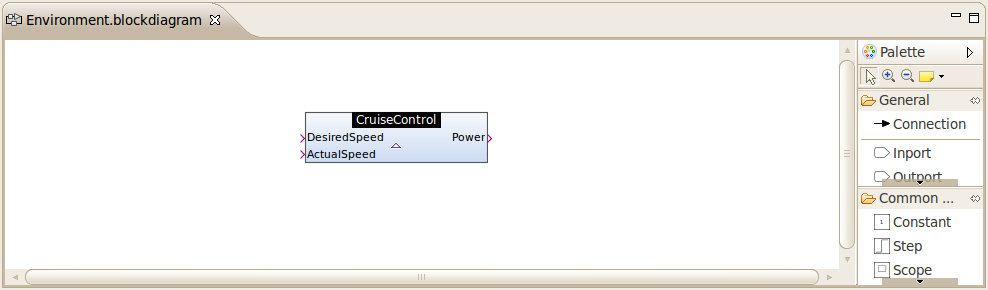
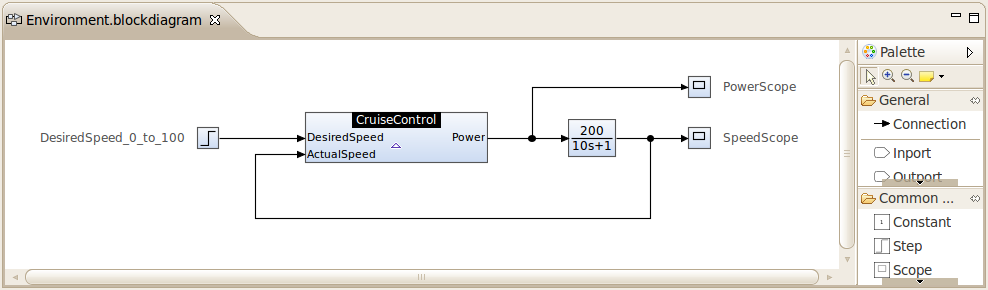

| Structuring Models using Subsystems | ||
|---|---|---|
| ||
| Generating C Code | ||
In this topic you will learn how to structure Damos models for better clarity and reusability. For illustration purposes we will reuse the example model of the previous topic. Therefore, before starting this topic, you should have a working model of the previous topic.
The goal will be to create an enclosing model for the cruise control model, which contains the cruise control model as a subsystem. The enclosing model will include blocks that describe the physical environment (e.g. a car) of the cruise control. This will allow us to simulate the cruise control model within its environment.
Before we can add the cruise control subsystem to our environment model, we need to define the system interface of our cruise control model. To create the system interface:
After clicking Finish, the new system interface definition will be opened in a text editor. It should have the following contents:
package cruisecontrol
systemInterface CruiseControl {
inlet real DesiredSpeed
inlet real ActualSpeed
outlet real Power
}
The inlet and outlet declarations are used to specify the inputs and outputs of the cruise control subsystem.
To create the environment model:
A subsystem CruiseControl has now been added to the block diagram. Note that the subsystem has a dashed border, which means that no subsystem realization has been specified. To specify the subsystem realization:

The block diagram should now look as follows (notice the solid subsystem border):

Finally, we need to add the following blocks:
0, final value of 100, and step time of 1(s){ 200 } and denominator coefficients of { 10, 1 }After connecting the blocks, the block diagram should look as follows:

To simulate the cruise control model within its environment model, select Run > Run As > Damos Simulation or click the Run ( ) icon in the toolbar. The simulation result should look as follows:
) icon in the toolbar. The simulation result should look as follows:

Note: If you get an error stating that the sample time could not be resolved for certain blocks, you probably forgot to set the sample time on the leftmost Sum block of your cruise control model (see previous topic for more details).
|  | |
| Generating C Code |